Bekerja dengan Teks
Jika Anda baru mengenal Microsoft Word, Anda harus mulai dengan mempelajari dasar-dasar mengetik, mengedit, dan mengatur teks. Kemampuan untuk menambah, menghapus, dan memindahkan teks dalam dokumen Anda, serta memotong, menyalin, dan menempel, semuanya merupakan operasi dasar.
Insertion point adalah itik penyisipan berupa garis vertikal berkedip dalam dokumen Anda. Hal ini menunjukkan di mana Anda dapat memasukkan teks pada halaman. Anda dapat menggunakan titik penyisipan dalam berbagai cara.
-
Blank document : Ketika sebuah dokumen kosong yang baru akan terbuka, titik penyisipan akan muncul di sudut kiri atas halaman. Jika Anda ingin, Anda dapat mulai mengetik dari lokasi ini.

-
Menambahkan spasi: Tekan spasibar untuk menambahkan spasi setelah kata atau di antara teks.

-
Baris baru dalam paragraf: Tekan Enter pada keyboard untuk memindahkan titik penyisipan ke baris paragraf berikutnya.

-
Penempatan manual: Setelah Anda mulai mengetik, Anda dapat menggunakan mouse untuk memindahkan titik penyisipan ke tempat tertentu dalam dokumen Anda. Cukup klik lokasi di teks di mana Anda ingin menempatkan itu.

- Tombol panah : Tombol panah pada keyboard Anda juga dapat digunakan untuk memindahkan lokasi penyisipan. ↑ dan ↓ bergerak melintasi garis paragraf, sedangkan ← dan → bergerak di antara huruf-huruf yang berdekatan pada baris yang sama. Anda juga dapat dengan cepat beralih di antara seluruh halaman dengan menekan Ctrl+← atau Ctrl+→.
Sebelum Anda dapat memindahkan atau memformat teks, Anda harus memilihnya. Untuk melakukan ini, klik dan tarik mouse Anda di atas teks, kemudian lepaskan mouse. Sebuah kotak tersorot akan muncul di atas teks yang dipilih.

Ketika Anda memilih teks atau gambar di Word, toolbar yang melayang disertai shortcut perintah akan muncul. Jika toolbar tidak segera muncul, coba layangkan mouse di atas bagaian yang diseleksi.

Untuk memilih beberapa baris teks, gunakan sintaks berikut:
-
Pindahkan pointer mouse ke kiri dari setiap baris sehingga menjadi panah miring kanan.

-
Klik mouse. Barisnya akan terseleksi.
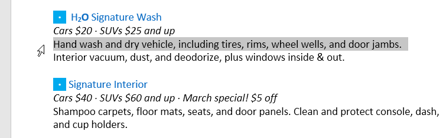
-
Untuk memilih beberapa baris, klik dan tarik mouse ke atas atau bawah.

-
Untuk memilih semua teks dalam dokumen Anda, pilih perintah Select pada tab Home, lalu klik Select All. Anda juga dapat menekan Ctrl+A pada keyboard Anda.

Ada beberapa cara untuk delete, atau remove, teks:
- Untuk menghapus teks di sebelah kiri titik penyisipan, tekan tombol Backspace pada keyboard Anda.
- Untuk menghapus teks ke kanan titik penyisipan, tekan tombol Delete pada keyboard Anda.
- Pilih teks yang ingin Anda hapus, kemudian tekan tombol Delete.
Word memungkinkan Anda untuk menyalin teks yang sudah ada di dokumen Anda dan paste di tempat lain, yang dapat menghemat banyak waktu dan upaya. Jika Anda ingin memindahkan teks di dalam dokumen Anda, Anda dapat cut dan paste atau drag dan drop.
Untuk menyalin dan menempelkan teks, lakukan hal berikut:
-
Pilih teks yang ingin Anda copy.
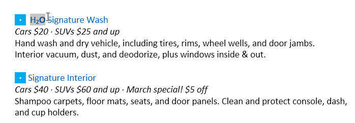
-
Pada tab Home, pilih perintah Copy. Anda juga dapat menggunakan Ctrl+C di keyboard.
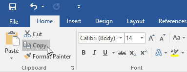
-
Atur titik penyisipan ke lokasi di mana Anda ingin teks muncul.

-
Pada tab Home, pilih perintah Paste. Anda juga dapat menggunakan Ctrl+V di keyboard.

-
Teks akan ditampilkan.

Untuk Cut dan paste teks :
-
Pilih teks yang ingin Anda Cut (Potong).
-
Pada tab Home, pilih perintah Cut. Anda juga dapat menggunakan Ctrl+X di keyboard.

-
Atur titik penyisipan Anda ke lokasi di mana Anda ingin teks muncul.

-
Pada tab Home, pilih perintah Paste. Anda juga dapat menggunakan Ctrl+V di keyboard.
-
Teks akan ditampilkan.

Untuk drag dan drop teks:
-
Pilih teks yang ingin Anda pindahkan.

-
Klik dan drag teks ke lokasi di mana Anda ingin itu muncul. Sebuah persegi panjang kecil akan muncul di bawah panah yang menunjukkan bahwa Anda sedang mengerakan teks.

-
Ketika Anda melepaskan mouse, teks akan ditampilkan.

Asumsikan Anda sedang mengerjakan dokumen dan secara tidak sengaja menghapus beberapa konten. Anda tidak perlu mengetik ulang apa pun yang baru saja Anda hapus, untungnya! Saat Anda membuat kesalahan seperti ini, Word memungkinkan Anda untuk membalikkan tindakan terbaru Anda.
Undo
untuk melakukannya, Cari dan pilih perintah Undo dari Quick Access Toolbar. Anda juga dapat menggunakan Ctrl+Z di keyboard. Anda dapat menggunakan perintah ini lagi dan lagi untuk membatalkan beberapa perubahan berturut-turut.

Redo
Di sisi lain, memungkinkan Anda untuk membatalkan pembatalan terakhir. Perintah ini juga dapat diakses dengan mengetik Ctrl+Y pada keyboard.
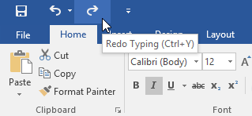
Memasukkan karakter tidak umum yang tidak ada di keyboard Anda, seperti hak cipta () atau merek dagang (TM), gunakan perintah Simbol.
Untuk menyisipkan simbol:
-
Tempatkan titik penyisipan di mana Anda ingin simbol muncul.

-
Arahkan ke tab Insert.

-
Cari dan pilih perintah Symbol, lalu dari menu drop-down, pilih simbol yang sesuai. Jika Anda tidak menemukan yang Anda cari, klik More Symbols...
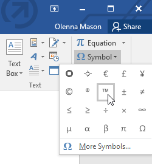
-
Simbol akan muncul di dokumen.
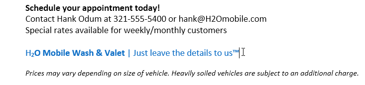
 Video
VideoTonton video di bawah untuk mempelajari dasar-dasar bekerja dengan teks di Word.
Latihan!
- Buka dokumen latihan kami.
- Gulir ke bawah ke halaman 2.
- Masukkan titik penyisipan di bagian atas halaman dan ketik Sekarang Memperkenalkan...
- Pindahkan titik penyisipan ke harga Paket Detail Tanda Tangan dan ubah menjadi $99,99/bln dengan tombol panah Anda.
- Seret dan lepas untuk memindahkan item di bagian bawah dokumen. Serahkan saja spesifikasinya kepada kami sampai baris terakhir.
- Masukkan tanda merek dagang di akhir baris yang baru saja Anda pindahkan. Jika Anda tidak dapat menemukan simbol merek dagang, gunakan simbol lain yang Anda pilih.
-
Ketika Anda selesai, dokumen Anda akan terlihat seperti ini:

Teks yang diformat dapat mengarahkan perhatian pembaca ke bagian tertentu dari dokumen dan menyoroti informasi penting. Teks dapat disesuaikan di Word dalam berbagai cara, termasuk font, ukuran, dan warna. Anda juga dapat mengubah orientasi teks untuk mengubah tampilannya di halaman.
-
Pilih teks yang ingin Anda ubah.

-
Klik panah drop-down Ukuran Font pada tab Home. Pilih ukuran font dari menu drop-down. Jika ukuran font yang Anda inginkan tidak ditampilkan di menu, Anda dapat memasukkannya ke dalam kotak Font Size dan tekan Enter.

-
Ukuran font dokumen akan berubah.

Anda juga dapat menggunakan perintah Grow Font dan Shrink Font untuk mengubah ukuran font.

Untuk mengubah jenis font :
Secara default, font pada buku kerja yang baru ditetapkan dengan jenis Calibri. Namun, Word memberikan banyak font lain yang dapat Anda gunakan untuk menyesuaikan teks.
-
Pilih teks yang ingin Anda ubah.
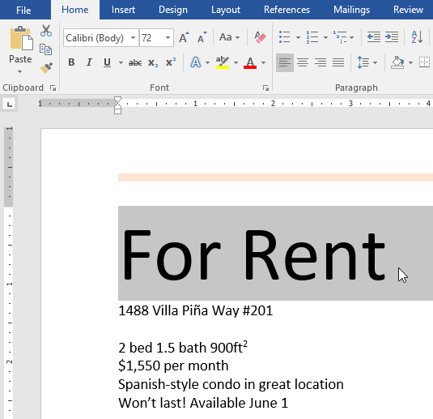
- Pada tab Home, klik panah drop-down di samping kotak Font. Menu jenis font akan muncul.
-
Pilih jenis font yang ingin Anda gunakan.

-
Font akan berubah dalam dokumen.

Untuk mengubah warna font :
-
Pilih teks yang ingin di ubah.
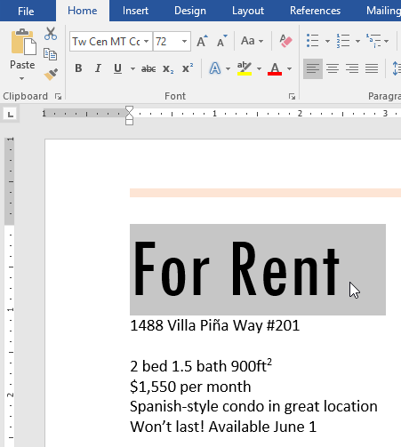
-
Pada tab Home, klik panah drop-down Font Color. Menu Font Color akan muncul.
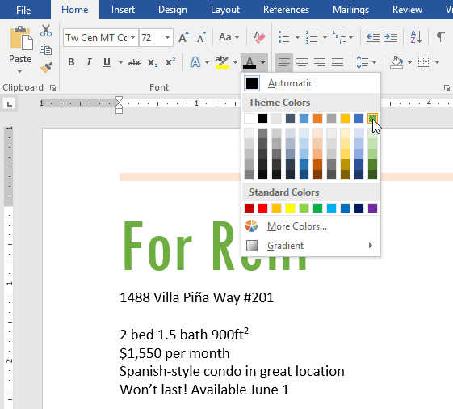
-
Pilih warna font yang ingin Anda gunakan. Warna font akan berubah dalam dokumen.

Pilihan warna Anda tidak terbatas pada menu drop-down yang muncul. Pilih More Colors di bagian bawah menu untuk mengakses kotak dialog Colors. Pilih warna yang Anda inginkan, lalu klik OK.

Bold, Italic, dan perintah Underline dapat digunakan untuk membantu menarik perhatian pada kata-kata atau frase penting.
-
Pilih teks yang ingin Anda ubah.

-
Klik perintah Tebal (B), Miring (I), atau Garis Bawah (U) grup Font pada tab Home. Kami akan memilih Bold.

-
Teks yang dipilih dokumen akan diubah.
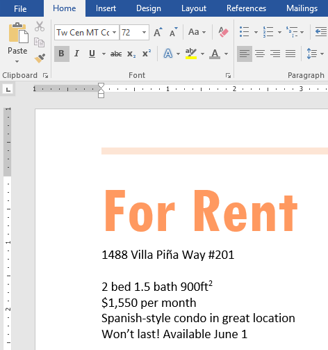
Untuk mengubah besar kecilnya teks, ikuti langkah-langkah berikut:
Daripada menghapus dan mengetik ulang teks, Anda dapat menggunakan perintah Change Case untuk mengubah huruf besar/kecil teks dengan cepat.
-
Pilih teks yang ingin Anda ubah.

- Klik perintah Change Case di grup Font pada tab Home.
-
Akan ada menu drop-down. Dari menu drop-down, pilih kasing yang Anda inginkan.
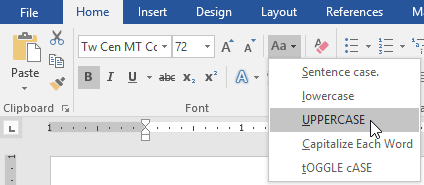
-
Teks akan diubah dalam dokumen.

Menyoroti mungkin merupakan teknik yang membantu untuk menyoroti informasi penting dalam naskah Anda.
-
Pilih teks yang akan disorot.
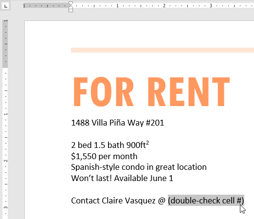
-
Klik panah drop-down Text Highlight Color pada tab Home. Menu Text Highlight Color ditampilkan.
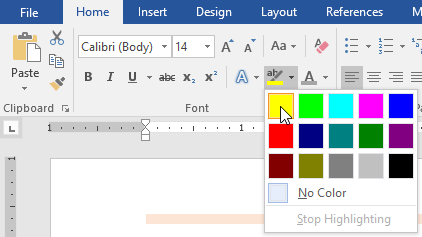
-
Pilih warna highlight yang Anda inginkan. Konten yang disorot dalam dokumen kemudian akan disorot.

Untuk menghapus penyorotan, pilih teks yang disorot, kemudian klik panah drop-down Text Highlight Color. Pilih No Color dari menu drop-down.

Secara default, Word meratakan teks ke margin kiri dalam dokumen baru. Namun, ada kalanya Anda ingin menyesuaikan perataan teks ke tengah atau ke kanan.
-
Pilih teks yang ingin Anda ubah.

-
Pada tab Home, pilih salah satu dari empatopsi penyelarasan dari grup Paragraf. kita telah memilih Center Alignment.

-
Teks akan diselaraskan kembali dalam dokumen.

Klik panah di tayangan slide di bawah ini untuk mempelajari lebih lanjut tentang empat opsi perataan teks.
Align Text Left :
Ini menyebabkan semua teks yang dipilih disejajarkan dengan margin kiri. Perataan yang paling sering adalah Align Text Left, yang digunakan secara default saat dokumen
baru dibuat.
Center :
Teks disejajarkan dengan jarak yang sama dari margin kiri dan kanan dengan pengaturan ini.

Align Text Right :
Ini menyebabkan semua teks yang dipilih disejajarkan dengan margin kanan.
Justify :
Teks yang dibenarkan adalah sama di kedua sisi. Itu sejajar dengan margin kanan dan kiri secara merata. Pembenaran penuh digunakan oleh beberapa publikasi dan majalah.
VideoTonton video di bawah ini untuk mempelajari lebih lanjut tentang format teks di Word.
Latihan!
- Buka dokumen latihan kami.
- Gulir ke bawah ke halaman 2.
- Ubah ukuran font menjadi 48 pt dan pilih frase For Rent.
- Ubah jenis huruf menjadi Franklin Gothic Demi saat teks masih dipilih. Jika Anda tidak melihat font ini di opsi, Anda dapat memilih yang lain.
- Untuk mengonversi For Rent ke UPPERCASE, gunakan perintah Change Case.
- Ubah warna frasa For Rent menjadi Gold, Accent 4, lalu simpan.
- Hapus sorotan nomor telepon (919-555-7237).
- Center Align semua teks dari For Rent to (919-555-7237).
- Cetak miring frasa tentang Villa Pia dalam paragraf di bawah ini.
-
Setelah selesai, halaman Anda akan terlihat seperti ini:

Saat Anda bekerja dengan dokumen yang lebih panjang, akan sulit dan memakan waktu lama untuk menemukan kata atau frasa tertentu. Word dapat secara otomatis mencari dokumen Anda menggunakan fitur Find, dan memungkinkan Anda mengubah kata atau frasa dengan cepat menggunakan Ganti.
Dalam contoh kita, kita telah menulis sebuah makalah akademis dan akan menggunakan perintah Find untuk menemukan kata tertentu.
-
Dari tab Home, klik perintah Find. Anda juga dapat menekan Ctrl+F pada keyboard.

- Panel navigasi akan muncul di sisi kiri layar.
-
Ketikkan teks yang ingin Anda temukan di bidang di bagian atas panel navigasi. Dalam contoh kita, kita akan mengetikkan kata yang kita cari.

-
Jika teks ditemukan dalam dokumen, teks akan disorot dengan warna kuning dan pratinjau hasilnya akan muncul di panel navigasi. Anda juga dapat mengklik salah satu hasil di bawah panah untuk melompat ke sana.

-
Setelah selesai, klik X untuk menutup panel navigasi. Sorotan akan hilang.
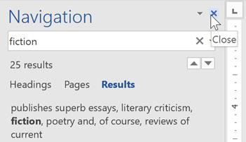
Untuk pencarian yang lebih lanjut, klik panah drop-down di sebelah kolom pencarian.

Suatu waktu, Anda mungkin menemukan bahwa Anda telah melakukan kesalahan berulang-ulang pada dokumen Anda, seperti salah mengeja nama seseorang, atau bahwa Anda perlu untuk menukar kata tertentu atau frase lain. Anda dapat menggunakan fitur Word Find and Replace agar dengan cepat membuat revisinya. Dalam contoh kita, kita akan menggunakan Find and Replace untuk mengubah judul majalah sehingga lebih singkat.
-
Dari tab Home, klik perintah Replace. Anda juga dapat menekan Ctrl+H pada keyboard Anda.
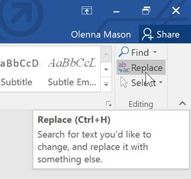
- Find and Replace kotak dialog akan muncul.
- Ketik teks yang ingin Anda temukan di Find what: field.
-
Ketik teks yang ingin Anda ganti di bidang Replace with: field, lalu klik Find Next.

- Word akan menemukan teks pertama dan menyorotnya dalam warna abu-abu (gray).
-
Tinjau teks untuk memastikan Anda ingin menggantinya. Dalam contoh kita, teks adalah bagian dari judul makalah dan tidak perlu diganti. Kami akan mengklik Find Next lagi untuk melompat ke contoh berikutnya.

-
Jika Anda ingin menggantinya, Anda dapat mengklik Replace untuk mengubah setiap contoh teks. Anda juga dapat mengklik Replace All untuk mengganti setiap teks di seluruh dokumen.

-
Teks akan diganti.
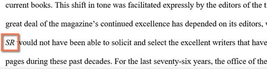
- Setelah selesai, klik Close atau Cancel untuk menutup kotak dialog.
Untuk pencarian lebih lanjut, klik More di kotak dialog Find and Replace. Dari sini, Anda dapat memilih pencarian tambahan, seperti kasus pencocokan dan pengabaian tanda baca.

VideoTonton video di bawah untuk mempelajari lebih lanjut tentang menggunakan Find & Replace.
Latihan!
- Buka dokumen latihan kami.
- Dengan menggunakan fitur Find, tentukan halaman mana yang menyebutkan Caroline Gordon.
- Nama TS Eliot salah eja. Menggantikan semuacontoh Elliot dengan Eliot. Ketika Anda selesai, Anda seharusnya melakukan tiga penggantian.
- Nama Allen Tate juga salah eja. Find and Replace Alan dengan Allen. Hint : Jangan gunakan Replace All. Jika tidak, Anda mungkin tidak sengaja mengganti kata balance.
Indentasi teks menambahkan struktur ke dalam dokumen Anda yang memungkinkan Anda untuk memisahkan informasi. Apakah Anda ingin memindahkan satu baris atau seluruh paragraf, Anda dapat menggunakan tab selector dan ruler horisontal untuk mengatur tab dan indentasi.
Dalam banyak jenis dokumen, Anda mungkin hanya ingin membuat indentasi baris pertama dari setiap paragraf. Ini membantu memisahkan paragraf satu sama lain secara visual.
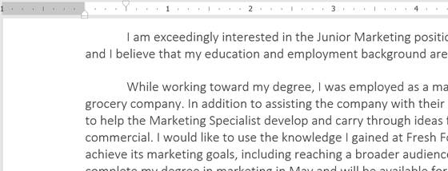
Anda juga dapat membuat indentasi setiap baris kecuali baris pertama, yang dikenal sebagai indentasi gantung.
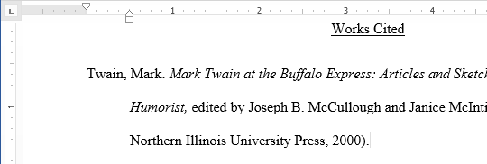
Cara cepat untuk meng-indent adalah dengan menggunakan tombol Tab. Ini akan menambahkan indent baris pertama sebesar 1/2 inci.
-
Tempatkan titik penyisipan di awal paragraf yang ingin Anda indentasi.

- Tekan tombol Tab. Pada Ruler, Anda akan melihat penanda indentasi baris pertama bergerak ke kanan sebesar 1/2 inci.
-
Baris pertama paragraf akan menjorok.
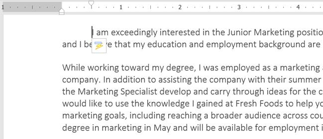
Jika Anda tidak dapat melihat Ruler, pilih tab View, lalu klik kotak centang di sebelah Ruler.
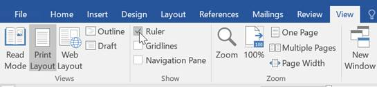
Dalam beberapa kasus, Anda mungkin ingin memiliki mengontrol terhadap indentasi. Word menyediakan marker indent yang memungkinkan Anda untuk meng-indent paragraf ke lokasi yang Anda inginkan.

Marker indent terletak di sebelah kiri ruler horisontal, dan mereka enyediakan beberapa pilihan Indentasi:
- First-line Indent marker menyesuaikan indent pada baris pertama.
- Hanging indent marker menyesuaikan indentasi gantung
- Left indent indent menggerakan kedua indent, first-line dan hanging indent pada saat yang sama (ini akan meng-indent semua baris dalam pada paragraf).
Meng-indent menggunakan indent marker:
-
Tempatkan titik penyisipan di mana saja di paragraf yang ingin Anda indent, atau pilih satu atau lebih paragraf.
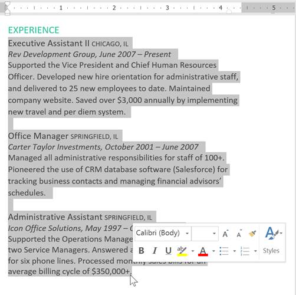
-
Klik dan tarik penanda indent yang diinginkan. Dalam contoh kita, kita akan klik dan tarik penanda left-indent.

-
Lepaskan mouse. Paragraf akan ter-indentasi.

Meng-indent menggunakan perintah Indentasi:
Jika Anda ingin meng-indent beberapa baris teks atau semua baris pada paragraf, Anda dapat menggunakan perintah Indent. Perintah Indent akan menyesuaikan indentasi dengan menambahkan 1/2-inch.
-
Pilih teks yang ingin Anda indent.

-
Pada tab Home, klik perintah Increase Indent atau Decrease Indent.

-
Teks akan ter-indent.

Untuk menyesuaikan jumlah indent, pilih tab Layout dekat kotak nilai yang diinginkan di bawah Indent.

Menggunakan tab akan memberikan Anda kendali yang lebih besar atas penempatan teks. Secara default, setiap kali Anda menekan tombol Tab, titik penyisipan akan bergerak 1/2 inci ke kanan. Menambahkan tab stop pada Ruler akan memungkinkan Anda untuk mengubah ukuran tab, dan bahkan Word memungkinkan Anda untuk menerapkan lebih dari satu tab stop pada satu baris. Sebagai contoh, pada resume, Anda bisa menyelaraskan baris awal ke kiri dan menyelaraskan baris akhir ke kanan dengan menambahkan Right Tab, seperti yang ditunjukkan pada gambar di bawah.

Menekan tombol Tab juga dapat menambahkan tab atau membuat indentasi pada baris pertama, tergantung di mana titik penyisipannya. Secara umum, jika titik penyisipan adalah di awal paragraf, itu akan membuat indentasi pada baris pertama; jika tidak, itu akan menciptakan tab.
Tab selector terletak di atas ruler vertikal di sebelah kiri. Arahkan mouse pada tab selector untuk melihat nama tab stop yang aktif.

Jenis tab stops:
-
Left Tab
 menyelaraskan teks di sebelah kiri pada tab stop.
menyelaraskan teks di sebelah kiri pada tab stop.
- Center Tab memusatkan teks di sekitar tab stop.
-
Right Tab
 menyelaraskan teks di sebelah kanan pada tab stop.
menyelaraskan teks di sebelah kanan pada tab stop.
-
Decimal Tab
 menyelaraskan angka desimal menggunakan desimal point.
menyelaraskan angka desimal menggunakan desimal point.
-
Bar Tab
 menggambar garis vertikal pada dokumen.
menggambar garis vertikal pada dokumen.
- First Line Indent menyisipkan penanda indent pada Ruler dan mengindentasi baris pertama teks dalam paragraf.
- Hanging Indent menyisipkan penanda hanging indent dan mengindentasi semua baris selain baris pertama.
Meskipun Bar Tab, First Line Indent, dan Hanging Indent muncul pada tab selector, mereka tidak secara teknis men-tab-kan.
-
Pilih paragraf yang ingin Anda tambahkan tab stop. Jika Anda tidak memilih paragraf apapun, tab stop akan diterapkan pada paragraf saat itu dan setiap paragraf baru Anda ketik di bawahnya.

-
Klik tab selector sampai tab stop yang ingin Anda gunakan muncul. Dalam contoh kita, kita akan pilih Right Tab.

-
Klik lokasi pada horisontal ruler di mana Anda ingin teks Anda muncul (hal ini dapat membantu, yaitu dengan meng-klik pada tepi bawah Ruler). Anda dapat menambahkan tab stop sebanyak yang Anda inginkan.

-
Tempatkan titik penyisipan di depan teks yang ingin Anda tab-kan, kemudian tekan tombol Tab. Teks akan melompat ke pemberhentian tab stop berikutnya. Dalam contoh kita, kita akan memindahkan setiap rentang tanggal ke tab stop yang kita buat.

Adalah ide yang baik untuk menghapus tab stop yang tidak Anda gunakan sehingga mereka tidak keluar jalur. Untuk menghapus tab stop, pertama pilih semua teks yang menggunakan tab stop. Kemudian klik dan drag mengeluarkan dari Penggaris.
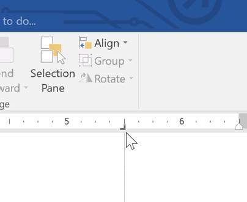
Word juga dapat menampilkan simbol pemformatan tersembunyi seperti spasi (  ), tanda paragraf (
), tanda paragraf (
 ), dan tab (
), dan tab (
 ) untuk membantu Anda melihat pemformatan dalam dokumen Anda. Untuk menampilkan simbol pemformatan tersembunyi, pilih tab
Home, lalu klik perintah Tampilkan/Sembunyikan.
) untuk membantu Anda melihat pemformatan dalam dokumen Anda. Untuk menampilkan simbol pemformatan tersembunyi, pilih tab
Home, lalu klik perintah Tampilkan/Sembunyikan.
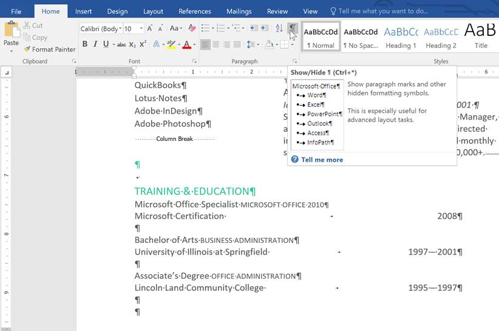
VideoTonton video di bawah ini untuk mempelajari lebih lanjut tentang bagaimana menggunakan indentasi dan tab di Word.
Latihan!
- Buka dokumen latihan kami.
-
Gunakan tombol Tab untuk mengindentasi awal setiap paragraf di badan surat lamaran. Ini dimulai dengan Saya sangat tertarik, Saat bekerja menuju, dan Terlampir adalah salinannya.
Setelah selesai, halaman pertama akan terlihat seperti ini:

- Gulir ke halaman 2.
- Pilih semua teks di bawah Training & Education pada halaman 2.
- Tempatkan tab kanan pada tanda 6" (15,25 cm).
- Masukkan kursor Anda sebelum setiap rentang tanggal, lalu tekan tombol T ab. Tanggal - tanggal tersebut termasuk tahun 2008, 1997-2001, dan 1995-1997.
- Pilih setiap deskripsi pekerjaan di bawah bagian Pengalaman, dan pindahkan indentasi kiri ke tanda 0,25" (50 mm).
-
Setelah selesai, halaman 2 akan terlihat seperti ini:

Ketika Anda merancang dokumen dan membuat keputusan bagaimana pemformatannya, Anda juga perlu dalam mempertimbangkan spasi baris dan paragraf. Anda dapat meningkatkan jaraknya agar lebih mudah dibaca dan membuatnya agar lebih sesuai dengan teks pada halaman.
Spasi baris adalah ruang antara setiap baris dalam sebuah paragraf. Word memungkinkan Anda untuk menyesuaikan jarak baris menjadi satu spasi (ketinggian satu baris), spasi ganda (ketinggian dua baris), atau jumlah lainnya yang Anda inginkan. Jarak baris standar di Word 1.08, yang sedikit lebih besar dari satu spasi.
Pada gambar di bawah ini, Anda dapat membandingkan berbagai jenis spasi. Dari kiri ke kanan, gambar ini menampilkan spasi baris yang standar, spasi tunggal, dan spasi ganda.

Spasi juga dikenal sebagai leading.
Untuk memformat spasi baris:
-
Pilih teks yang ingin Anda format.

-
Pada tab Home, klik perintah Line and Paragraph Spacing, lalu pilih line spacing yang diinginkan.

-
Spasi baris akan berubah dalam dokumen.

Pilihan spasi baris Anda tidak terbatas pada salah satu menu di Line and Paragraph Spacing. Untuk mengatur jarak dengan lebih presisi, pilih Line Spacing Options dari menu untuk mengakses kotak dialog Paragraph. Kemudian Anda akan memiliki beberapa pilihan lainnya yang dapat Anda gunakan untuk menyesuaikan jarak.
- Exactly : Bila Anda memilih opsi ini, jarak baris diukur dalam poin, seperti ukuran font. Misalnya, jika Anda menggunakan ukuran teks 12-point, Anda bisa menggunakan spasi dengan jarak 15-point.
- At least : Seperti pilihan Exactly, ini memungkinkan Anda memilih berapa banyak poin dari jarak yang Anda inginkan. Namun, jika Anda memiliki ukuran teks yang berbeda pada baris yang sama, jarak spasinya akan diperluas sesuai dengan teks yang lebih besar.
-
Multiple : Opsi ini memungkinkan Anda mengetik jumlah baris spasi yang Anda inginkan. Misalnya, memilih Multiple dan mengubah jarak menjadi 1,2 akan membuat teks sedikit lebih menyebar daripada teks satu spasi. Jika Anda ingin baris bersama-sama menjadi lebih dekat, Anda dapat memilih nilai yang lebih kecil, seperti 0,9.

Sama seperti memformat jarak antar-baris dalam dokumen, Anda juga dapat mengatur jarak sebelum dan sesudah paragraf. Hal ini berguna untuk memisahkan paragraf, judul, dan subheading.
Untuk memformat spasi paragraf:
Dalam contoh kita, kita akan meningkatkan ruang sebelum di setiap paragraf untuk memisahkan sedikit. Ini akan membuatnya menjadi lebih mudah dibaca.
-
Pilih paragraf yang ingin Anda format.
-
Pada tab Home, klik perintah Line and Paragraph Spacing. Klik Add Space Before Paragraph atau Remove Space After Paragraph dari menu drop-down. Dalam contoh kita, kita akan pilih Add Space Before Paragraph.

-
Jarak paragraf akan berubah dalam dokumen.

Dari menu drop-down, Anda juga dapat memilih Line Spacing Options untuk membuka kotak dialog Paragraph. Dari sini, Anda dapat mengontrol berapa banyak ruang yang ada sebelum dan sesudah paragraf.
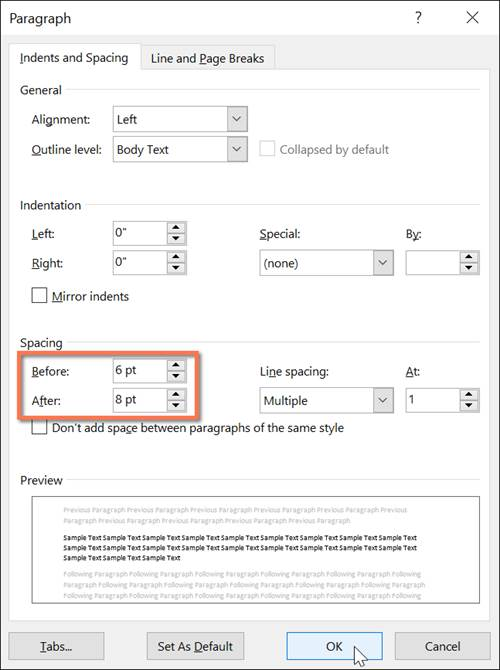
VideoTonton video di bawah untuk mempelajari cara merapikan spasi baris dan spasi paragraf dalam dokumen Anda.
Latihan!
- Buka dokumen latihan kami.
- Pilih tanggal dan blok alamat. Ini dimulai dengan 13 April 2016, dan berakhir dengan Trenton, NJ 08601.
- Ubah spasi sebelum paragraf menjadi 12 pt dan spasi setelah paragraf menjadi 30 pt.
- Pilih isi surat. Ini dimulai dengan saya sangat dan berakhir dengan pertimbangan Anda.
- Ubah spasi baris menjadi 1,15.
-
Setelah selesai, halaman Anda akan terlihat seperti ini:

Bullet dan daftar nomor dapat digunakan dalam dokumen Anda untuk menguraikan, mengatur, dan menekankan teks. Dalam pelajaran ini, Anda akan belajar bagaimana memodifikasi bullets yang ada, masukkan bullets dan daftar penomoran, pilih simbol sebagai peluru, dan format daftar multilevel.
Untuk membuat daftar bullet:
-
Pilih teks yang ingin Anda format sebagai daftar.
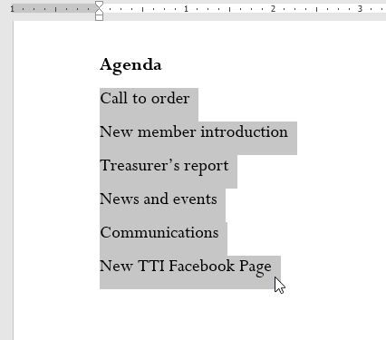
-
Pada tab Home, klik panah drop-down di samping perintah Bullets. Menu gaya Bullets akan muncul.

-
Gerakkan mouse ke berbagai gaya Bullets. Pratinjau langsung gaya Bullets akan muncul di dokumen. Pilih gaya Bullets yang ingin Anda gunakan.
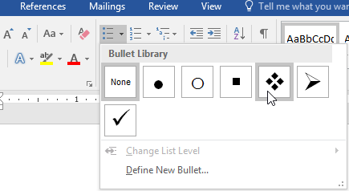
-
Teks akan diformat sebagai daftar bullet.
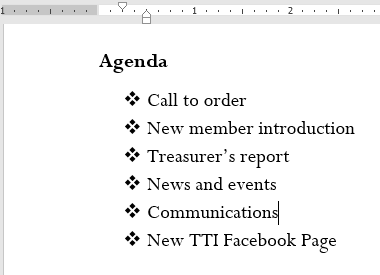
Pilihan untuk bekerja dengan List
- Untuk menghapus nomor atau bullets dari daftar, pilih daftar dan klik perintah daftar Bulleted atau Numbered.
- Ketika Anda mengedit daftar, Anda dapat menekan Enter untuk memulai baris baru, dan baris baru akan secara otomatis yang memiliki bullets atau nomor. Ketika Anda telah mencapai akhir dari daftar Anda, tekan Enter dua kali untuk kembali ke format normal.
- Dengan menyeret penanda indent pada Ruler, Anda dapat menyesuaikan Indentasi dari daftar Anda dan jarak antara teks dan bullets atau nomor.
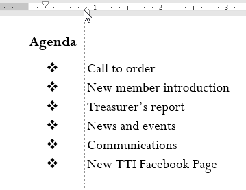
Bila Anda perlu mengatur teks ke dalam daftar bernomor, Word menawarkan beberapa pilihan penomoran. Anda dapat memformat daftar Anda dengan angka, huruf, atau angka Romawi.
-
Pilih teks yang ingin Anda format sebagai daftar.

-
Pada tab Home, klik panah drop-down di samping perintah Numbering. Menu gaya penomoran akan muncul.

-
Gerakkan mouse ke berbagai gaya penomoran. Pratinjau langsung gaya penomoran akan muncul di dokumen. Pilih gaya penomoran yang ingin Anda gunakan.

-
Teks akan diformat sebagai daftar bernomor.

Jika Anda ingin memulai ulang penomoran daftar, Word memiliki opsi Restart at 1. Ini dapat diterapkan pada daftar numerik dan alfabet.
-
Klik kanan item daftar yang ingin Anda mulai ulang penomorannya, lalu pilih Restart at 1 dari menu yang muncul.

-
Penomoran daftar akan dimulai ulang.

Anda juga dapat mengatur daftar untuk melanjutkan penomoran dari daftar sebelumnya. Untuk melakukannya, klik kanan dan pilih Continue Numbering.

Menyesuaikan tampilan bullets pada list dapat membantu Anda menekankan item daftar tertentu dan personalisasi desain daftar Anda. Word memungkinkan Anda untuk memformat bullets dalam berbagai cara. Anda dapat menggunakan simbol dan warna yang berbeda, atau bahkan meng-upload gambar sebagai bullets.
Menggunakan simbol sebagai bullet:
-
Pilih daftar yang sudah ada yang ingin Anda format.

-
Pada tab Home, klik panah drop-down di samping perintah Poin. Pilih Define New Bullet dari menu drop-down.
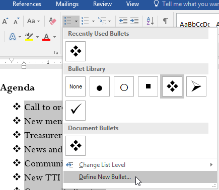
-
Kotak dialog Define New Bullet akan muncul. Klik tombol Symbol.
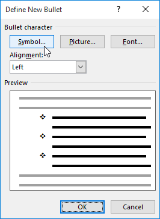
- Kotak dialog Symbol akan muncul.
- Klik kotak drop-down Font dan pilih font. Wingdings dan Symbol font adalah pilihan yang baik karena mereka memiliki banyak simbol yang berguna.
-
Pilih simbol yang diinginkan, lalu klik OK.
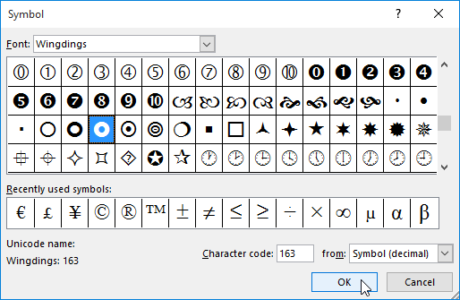
-
Simbol akan muncul di bagian Pratinjau dari kotak dialog Define New Bullet. Klik Oke.

-
Simbol akan muncul dalam daftar.

-
Pilih daftar yang sudah ada yang ingin Anda format.

-
Pada tab Home, klik panah drop-down di samping perintah Poin. Pilih Define New Bullet dari menu drop-down.

-
Kotak dialog Define New Bullet akan muncul. Klik tombol Font.

- Kotak dialog Font akan muncul. Klik kotak drop-down Warna Font. Menu warna font akan muncul.
-
Pilih warna yang diinginkan, lalu klik OK.
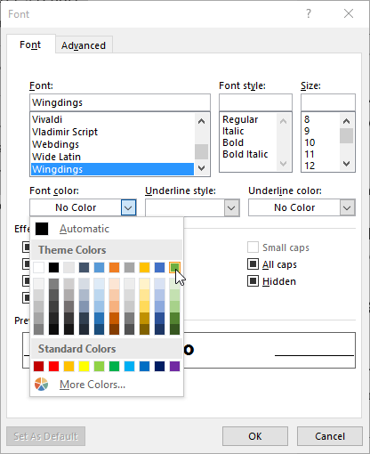
-
Warna bullet akan muncul di bagian Preview dari kotak dialog Define New Bullet. Klik Oke.

-
Warna Bullets akan berubah dalam daftar.

Daftar Multilevel memungkinkan Anda untuk membuat garis dengan beberapa tingkatan. Setiap bullet atau daftar nomor dapat berubah menjadi daftar multilevel dengan menggunakan tombol Tab.

Membuat Daftar Multilevel : (multilevel list)
-
Tempatkan titik penyisipan di awal baris yang ingin Anda pindahkan.

-
Tekan tombol Tab di keyboard untuk menambah tingkat indentasi garis. Garis akan bergerak ke kanan.
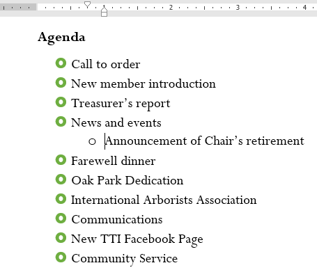
Anda dapat membuat penyesuaian pada pengaturan daftar multilevel dengan menambah atau mengurangi level indentasi. Ada beberapa cara untuk mengubah level indentasi.
-
Untuk meningkatkan indent dengan lebih dari satu tingkat, tempatkan titik penyisipan pada awal baris, kemudian tekan tombol Tab sampai tingkat yang diinginkan tercapai.

-
Untuk menurunkan tingkat indent, tempatkan titik penyisipan pada awal baris, kemudian tahan tombol Shift dan tekan tombol Tab.

-
Anda juga dapat menambah atau mengurangi tingkatan teks dengan menempatkan titik penyisipan di mana saja di baris dan mengklik perintah Increase Indent atau Decrease Indent.

Ketika memformat daftar multilevel, Word akan menggunakan gaya bullet yang sudah default. Untuk mengubah gaya daftar multilevel, pilih daftar, lalu klik perintah Multilevel list pada tab Home.
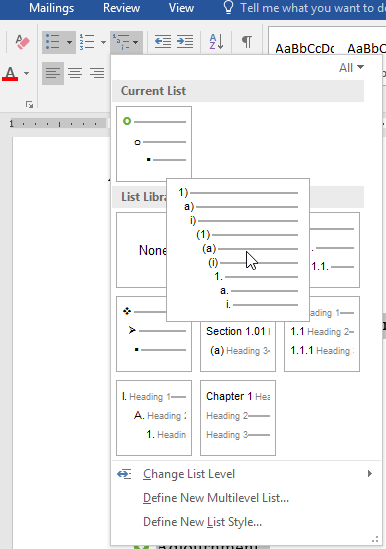
VideoTonton video di bawah ini untuk mempelajari lebih lanjut tentang daftar di Word.
Latihan!
- Buka dokumen latihan kami.
- Gulir ke halaman 3.
- Pilih teks di bawah Anggota Baru yang dimulai dengan Carolyn dan diakhiri dengan Bendahara Bersama, dan format sebagai daftar berpoin.
- Dengan teks yang masih dipilih, gunakan kotak dialog Define New Bullet untuk mengubah bullet menjadi bintang hijau. Petunjuk : Anda dapat menemukan bintang di font Wingdings.
- Tingkatkan indent level sebesar 1 untuk lini Social Media Marketing, Fundraising, dan Co-Treasurer.
- Tingkatkan level indent sebesar 2 untuk jalur Terutama Eropa.
- Dalam daftar Laporan Bendahara, turunkan level indent sebanyak 1 untuk baris Jumlah yang tersedia bulan ini.
- Dalam daftar Laporan Komunikasi, mulai ulang penomoran pada 1.
-
Setelah selesai, halaman Anda akan terlihat seperti ini:

Menambahkan hyperlink, juga dikenal sebagai Link atau Tautan, ke teks dapat memberikan akses ke website dan alamat email langsung dari dokumen Anda. Ada beberapa cara untuk menyisipkan hyperlink ke dalam dokumen. Bergantung pada bagaimana Anda ingin menampilkan tautan itu, Anda bisa menggunakan pemformatan tautan otomatis Word atau mengonversi teks menjadi tautan.
hyperlink memiliki dua bagian dasar : alamat (URL) halaman web dan teks tampilan. Misalnya, alamatnya bisa berupa
www.lesson.com, dan teks tampilannya bisa berupa E-Learning Microsoft Office
. Saat Anda membuat hyperlink di Word, Anda akan dapat
memilih alamat dan teks tampilan.
Word sering kali mengenali email dan alamat web saat Anda mengetik dan akan secara otomatis memformatnya sebagai hyperlink setelah Anda menekan Enter atau spasibar. Pada gambar di bawah, Anda dapat melihat alamat web hyperlink.

Untuk mengikuti hyperlink di Word, tahan tombol Ctrl dan klik hyperlink.

Untuk memformat teks dengan hyperlink:
-
Pilih teks yang ingin Anda format sebagai hyperlink.
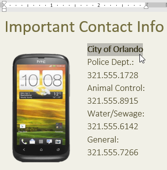
-
Pilih tab Insert, lalu klik perintah Link.

Anda juga dapat membuka kotak dialog Insert Hyperlink dengan mengklik kanan teks yang dipilih dan memilih Link... dari menu yang muncul.
- Kotak dialog Insert Hyperlink akan muncul. Dengan menggunakan opsi di sisi kiri, Anda dapat memilih untuk menautkan ke File, Webpage, Email address, Document atau Place in the current document.
- Teks yang dipilih akan muncul di bagian Text to display: di bagian atas. Anda dapat mengubah teks ini jika Anda mau.
-
Di bagian Address: field, ketik alamat yang ingin Anda tautkan, lalu klik OK.

-
Teks kemudian akan diformat sebagai hyperlink.

Setelah Anda menyisipkan hyperlink, Anda dapat mengklik kanan hyperlink untuk mengedit, membuka, menyalin, atau menghapusnya.

Untuk menghapus hyperlink, klik kanan hyperlink dan pilih Remove hyperlink dari menu yang muncul.

Tonton video di bawah untuk mempelajari lebih lanjut tentang cara membuat dan membuka dokumen di Word.
Latihan!
- Buka dokumen latihan kami.
- Gulir ke halaman 4.
- Pada poin pertama di bawah
Community Reminders
, formatlah kata website sebagai hyperlink ke website. - Uji hyperlink Anda untuk memastikannya berfungsi.
- Di poin kedua, hapus hyperlink dari kata
Parks and Recreation
. -
Setelah selesai, halaman Anda akan terlihat seperti ini:
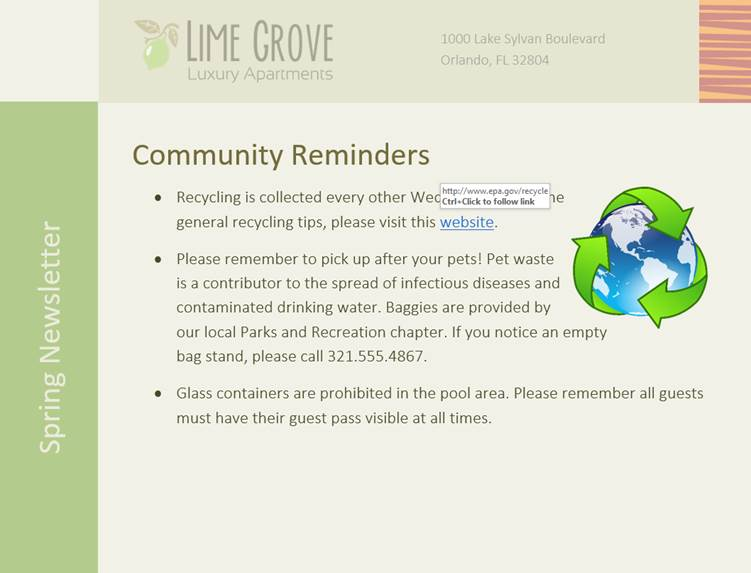